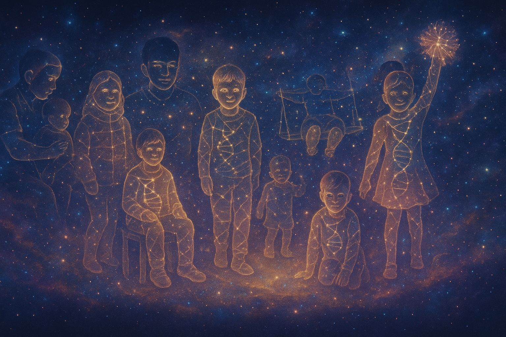
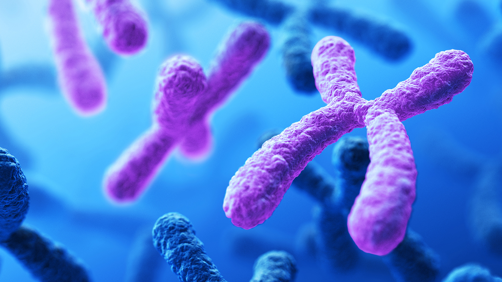

Microdeleción 15q11.2
Información clave para comprender esta condición genética poco frecuente, organizada de manera clara para familias y profesionales.

Comunidad de familias 15q11.2 - Apoyo mutuo e información compartida
¿Qué es?
La microdeleción 15q11.2 es una condición genética rara causada por la pérdida de una pequeña porción del cromosoma 15, en la región conocida como Burnside-Butler. Afecta los genes TUBGCP5, CYFIP1, NIPA2 y NIPA1.
Síntomas frecuentes
- Retraso en el desarrollo motor y/o del lenguaje.
- Dificultades de aprendizaje (leves a moderadas).
- Trastornos de la comunicación, TEA, TDAH, ansiedad.
- Convulsiones o actividad epileptiforme.
- Hipotonía en la infancia.
- Problemas gastrointestinales y de sueño.

Representación de cromosomas - Estructura genética
¿Qué tan común es?
La prevalencia de la microdeleción 15q11.2 es relativamente rara. La información actual sugiere una prevalencia estimada de 1 a 2 por cada 10,000 nacidos vivos en la población general.
Sin embargo, entre las personas que se someten a un microarray genético (una prueba específica), se detecta en un 0.25–0.30% de los casos, lo que la convierte en una de las microdeleciones más frecuentes encontradas en análisis clínicos.
Expresividad variable: no todos los portadores presentan síntomas graves.
¿Se hereda?
Herencia Autosómica Dominante
La microdeleción 15q11.2 sigue un patrón de herencia autosómico dominante. Esto significa que una persona afectada tiene un 50% de probabilidad de transmitir la microdeleción a cada uno de sus hijos.
Origen "De Novo" (Nuevo)
En aproximadamente el 65% de los casos, la microdeleción es de novo, lo que significa que ocurrió como un evento nuevo en el niño y no fue heredada de los padres. En este escenario:
- La probabilidad de que esos padres tengan otro hijo con la misma condición es muy baja (menor al 1%).
- Sin embargo, el niño afectado, al tener la microdeleción en su ADN, sí tiene un 50% de riesgo de pasarla a su descendencia.
¿Cómo se detecta?
Mediante estudios como Microarray CGH o SNP microarrays, que son más precisos que el cariotipo convencional. Si ves un resultado similar a este en un informe, aquí te explicamos qué significa:
- arr: Es el tipo de prueba (array o microarray).
- 15q11.2: Es la "dirección" del problema. Significa que está en el cromosoma 15, en el brazo largo (q), en la banda 11.2.
- (22,728,371-23,260,335): Son las "coordenadas" exactas del trozo de ADN que falta.
- x1: Significa que solo hay una copia de este trozo, cuando debería haber dos (una de cada progenitor).
- dn: A menudo significa "de novo", indicando que la mutación es nueva en el niño.
Nota: La nomenclatura puede variar ligeramente entre laboratorios, pero la estructura suele ser similar.
Genes involucrados
- NIPA1 / NIPA2: transporte de magnesio, epilepsia y rigidez muscular.
- CYFIP1: vinculado con autismo y dificultades cognitivas.
- TUBGCP5: asociado a TDAH, TOC y ansiedad.

Representación de microdeleción cromosómica
Genes implicados
Esta región crítica contiene cuatro genes principales:
- CYFIP1: Regula la síntesis de proteínas en sinapsis neuronales
- NIPA1/2: Transportadores de magnesio esenciales
- TUBGCP5: Participa en la organización microtubular
Patrón de herencia
Características genéticas principales:
- Herencia autosómica dominante con penetrancia variable
- ~65% de casos son de novo (no heredados)
- Riesgo de recurrencia del 50% en descendencia
Nota sobre los datos: Los gráficos muestran información basada en literatura médica general sobre microdeleción 15q11.2. Los porcentajes son ilustrativos y pueden variar en cada caso individual.
Apoyo y recomendaciones
La intervención temprana con terapias de lenguaje, fisioterapia y apoyo conductual puede marcar la diferencia.
Existen comunidades de familias, como Unique, donde compartir experiencias y apoyarse mutuamente.
"La microdeleción 15q11.2 no define a tu hijo. Con apoyos adecuados, cada persona puede desarrollarse a su manera y alcanzar su máximo potencial."